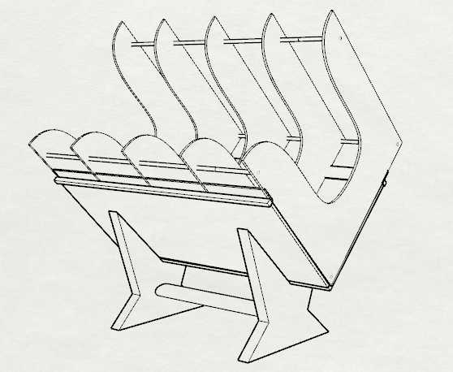
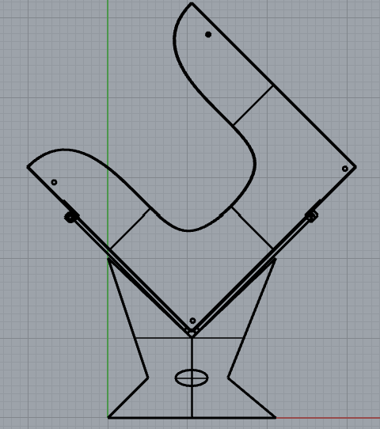
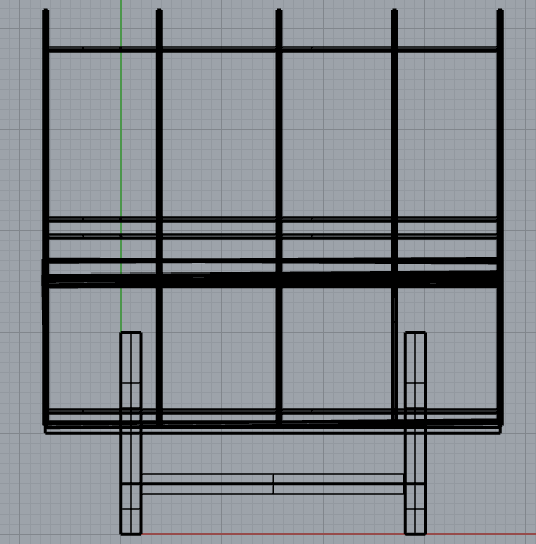
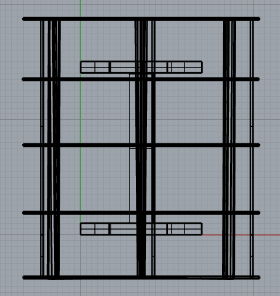
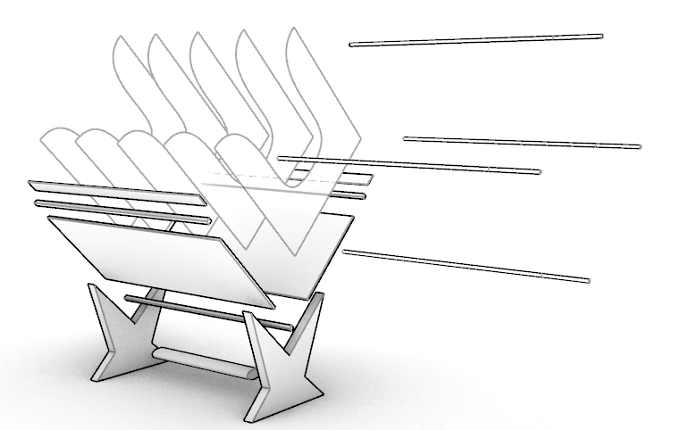
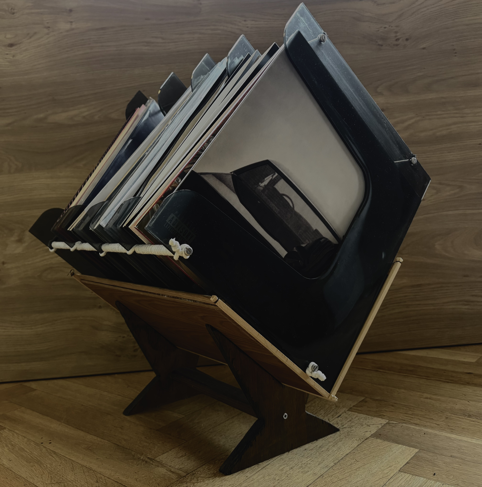
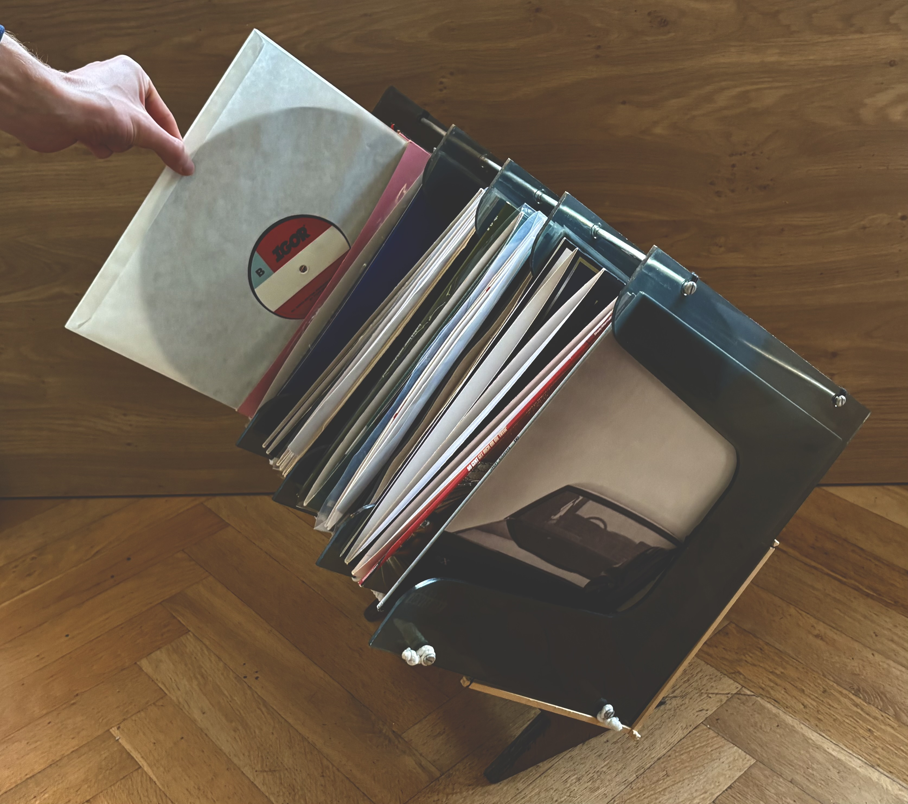

10 / Furniture & product design
Vinyl Record Holder
A freestanding wooden rack that gives a vinyl collection a clear place in the room and makes browsing records part of listening.

Make the collection easy to explore
Vinyl is enjoyable to handle and browse, but a growing collection can become difficult to organise and access. This holder gives records a dedicated, open home: sleeves stand upright in individual sections, so it is easier to scan the collection and pull out a record without disturbing the rest.
The design takes cues from the visual language of a record sleeve. Repeated, flowing dividers create a recognisable rhythm while helping separate groups of records. The broad front panel carries the weight of the collection, and the angled stance presents it at a comfortable viewing position.

Balance the collection and the frame
The holder is organised as a compact assembly of shaped panels, crosspieces and a pair of broad feet. The feet spread the load across the floor, while the angled body lets the records lean into the frame. Slender rods pass through the dividers to keep them aligned and create a consistent spacing across the rack.
Orthographic views help check how the components line up from the front, side and above. The exploded view separates the main elements to make the proposed assembly easier to understand.




Keep listening within reach
The finished holder places a collection at an easy angle for browsing and makes individual sleeves accessible from the front. The open dividers give records room while keeping them upright, and the wooden construction brings warmth to the object as a piece of furniture.
The photographs show the holder in use: one captures the stored collection, while the other shows a record being selected. Together they illustrate the simple interaction the design is built around.


The dimensions, material specification and load capacity are not shown in the supplied drawings, so this page focuses on the visible design and use.
Next projectThe Flipper